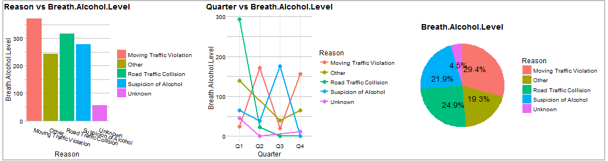

Digital Breath Test Data Analysis Tool
The Shiny App
WONG WING KENG
Jan, 2016
The Digital Breath Test Analysis App
- Enable quick review to UK GOV Road Safety Data.
- Helps understand trends and extract valuable information.
- Helps decision making, policies planning, raises safety awareness etc...
- Use anywhere, anytime; online on any devices (computer,tablet, mobile devices...)
Data source
Digital Breath Test Data - England and Wales 2014.
Source: DATA.GOV.UK, Road Safety Data
*Suitable for those with interest on Road Safety Data Trending for England.
Featuring
DYNAMIC DATA BROWSER
- Quick data searching
- Individual data column filtering
- View complete data details from the dataset
Featuring
INTERACTIVE CHARTS
- Zoom in/out of area of interest in Charts
- Dynamic filtering on Chart legend items
- Download Chart for offline usage
- Different Chart options: Bar, Line and Pie Chart
